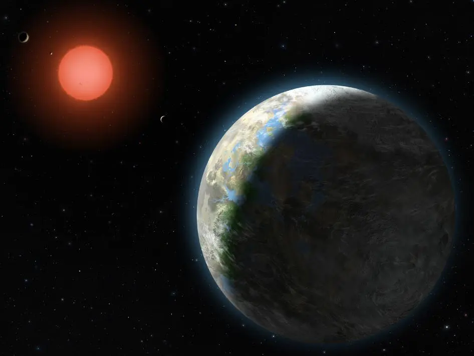

الكواكب الخارجية
الكواكب الخارجية هي الكواكب البعيدة عن الشمس وتشمل المشتري، زحل، أورانوس، ونبتون. هذه الكواكب ضخمة جدًا وتتكون في الغالب من الغازات. المشتري هو أكبر كوكب في النظام الشمسي وله أكثر من 79 قمرًا. زحل معروف بحلقاته الجميلة التي تتكون من جليد وصخور.
